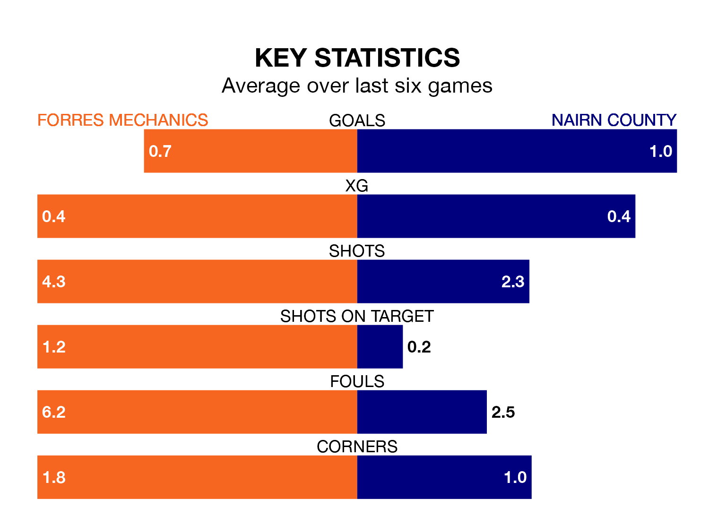

Forres Mechanics are on a terrible run ahead of hosting Nairn County at Mosset Park on Saturday, with just two points collected from their last six games.
Forres Mechanics have picked up two draws and four losses in their last six Highland Football League games, and face a Nairn side whose last six games have brought one win and two draws.
In the last 10 years, Forres Mechanics and Nairn have played each other on 12 occasions. Forres Mechanics won six of them, Nairn four, and they drew twice.
On average, Forres Mechanics scored 2.8 goals and Nairn 1.8 in those matches.
Their last meeting was on November 18, when Nairn won 2-1 at home.
Forres Mechanics are 15th in the table after 28 games, of which they have won five and drawn seven, earning 22 points.
Nairn are seven places ahead of the home team in eighth, with 15 wins and three draws putting them on 48 points.
With 31 goals in 28 games so far this season, Forres Mechanics are the league's third-lowest scorers with 1.1 goals per game. And they are conceding more than average, letting in 52 goals at a rate of 1.9 per game.
County, meanwhile, are average scorers, with 1.8 goals per game. They have conceded 1.9 goals per game.
Forres Mechanics's last match was on Wednesday, a 2-1 loss against Fraserburgh.
Nairn lost 3-0 against Fraserburgh last time out, on March 16.
Updated: 10:19 (UTC), 22/03/24